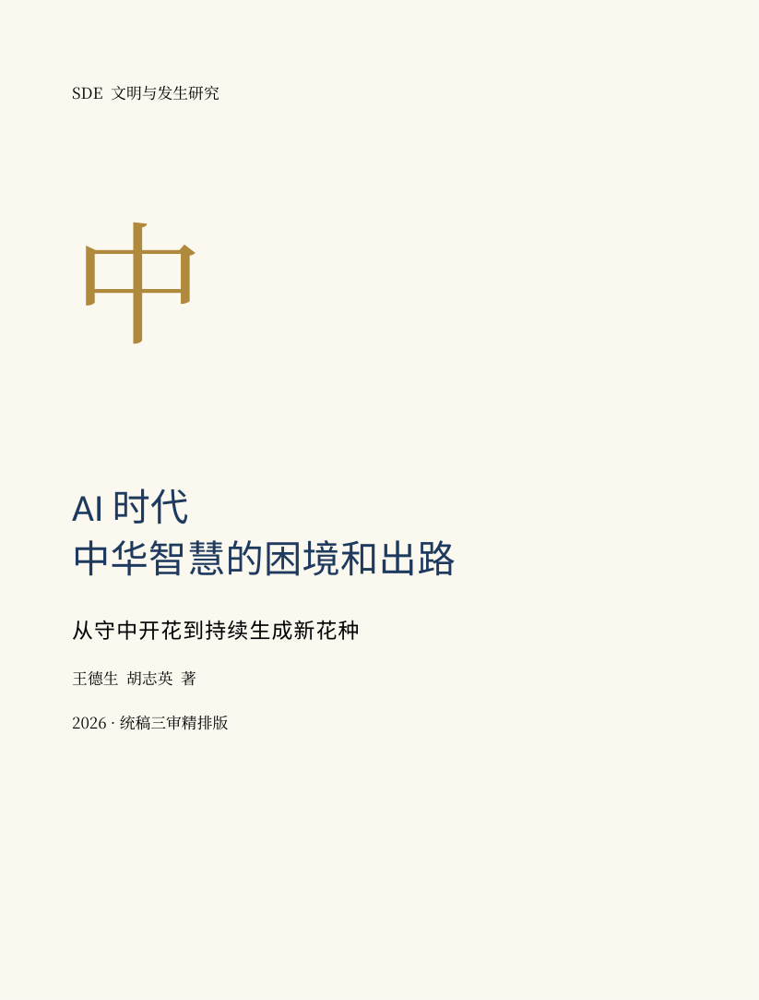

第596卷 · 王德生、胡志英 著
从守中开花到持续生成新花种
ISBN 979-8-90690-624-3 · US$20.00
从中原之问出发，重审中庸发展智慧与AI时代持续创造的关系。全书九编44章，正文258,269汉字，教育、健康、事业专编完整保留。
阅读、学习、智能问对三位一体出版单元
配套学习设计，不是著者原文或能力认证；学习记录只留在你的浏览器。问对规范 · 单元版本与边界 · 下载学习包 PDF

本书提出理论解释与待实施方案，未将试点设想写成实证成果。三轮内部审读不等同于独立同行评议。